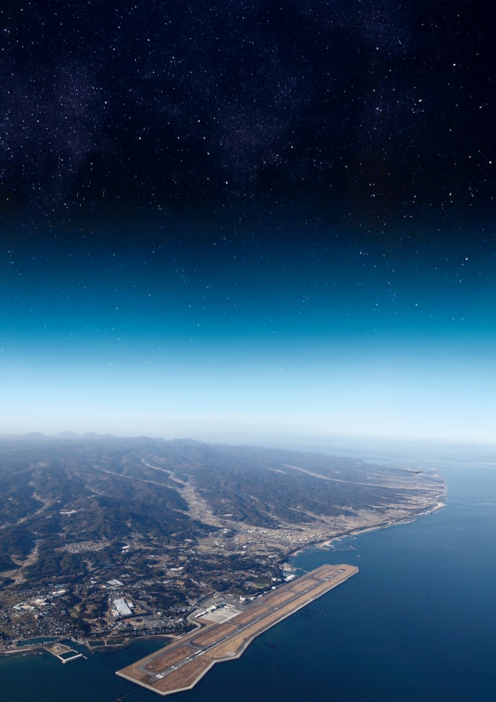

第72回 日本宇宙航空環境医学会学術大会
〜地方から宇宙へ〜
Spaceport Oita: From Local to Space
宇宙から帰還する人を、
このまちが迎え、医学が支える。
2026年12月3日（木）– 12月6日（日）
会場 J:COMホルトホール大分
大会長 徳丸 治（大分大学 福祉健康科学部 教授）
このたび、第72回日本宇宙航空環境医学会大会を、大分の地で開催させていただく運びとなりました。本大会のテーマは「宇宙港大分 〜地方から宇宙へ〜」です。
2030年代の国際宇宙ステーション退役を見据え、民間企業による宇宙ステーションの打ち上げが加速する時代において、大分空港が「大分宇宙港」として位置づけられる未来を見据えた議論を、この大会で深めてまいりたいと考えております。
地方が宇宙とつながる時代に、医学はどのように人を支えるのか。皆さまのご参加を心よりお待ち申し上げております。
※ プログラムは調整中のため、内容・登壇者は変更となる場合があります。
事前登録で当日の受付がスムーズに行えます。